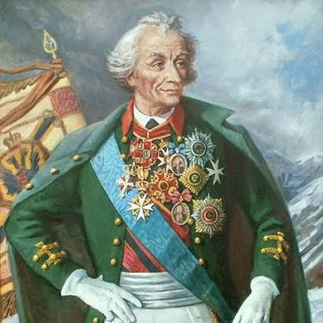
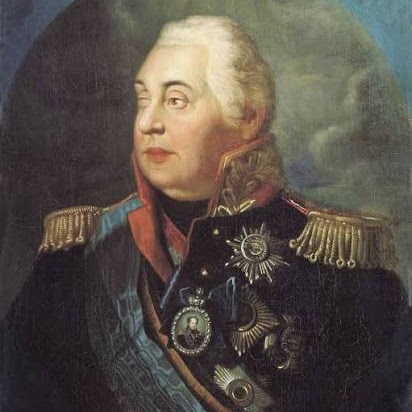
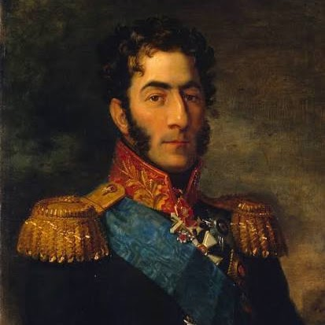
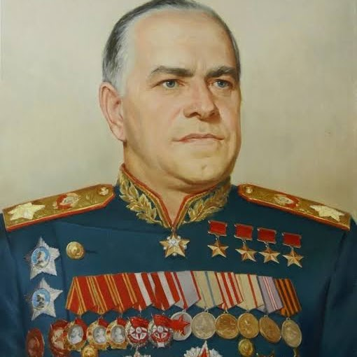
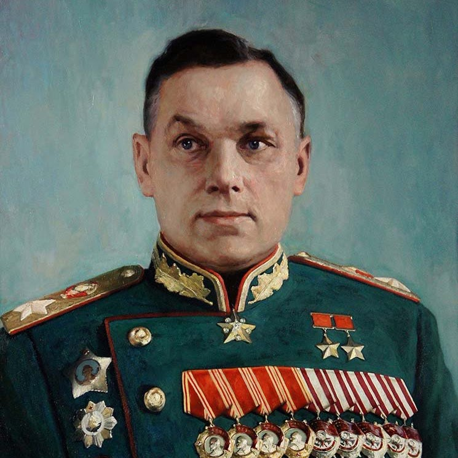
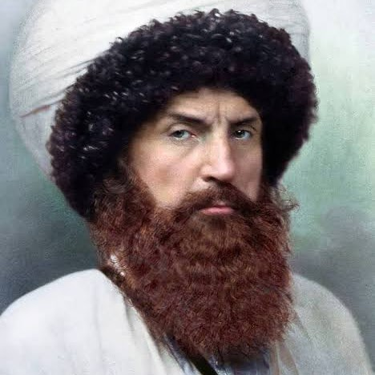

1730–1800
Александр Суворов
Генералиссимус. Не проиграл ни одного сражения: Измаил, Рымник, переход через Альпы.
Подробнее →В России живёт более ста народов. У каждого есть свои герои — и все они защищали общую Родину.






Нажмите «Подробнее», чтобы прочитать биографию
Генералиссимус. Не проиграл ни одного сражения: Измаил, Рымник, переход через Альпы.
Подробнее →Генерал армии, дважды Герой Советского Союза. Мастер стремительных конно-механизированных рейдов.
Подробнее →Имам Дагестана и Чечни, 25 лет возглавлял горцев Северного Кавказа.
Подробнее →Генерал-полковник, легендарный кавалерист Гражданской войны. Герой Советского Союза.
Подробнее →Генерал армии, фронтовик и военный учёный, президент Академии военных наук.
Подробнее →Генерал-фельдмаршал, главнокомандующий в 1812 году. Изгнал армию Наполеона из России.
Подробнее →Генерал от инфантерии. Оборонял флеши на Бородинском поле, где был смертельно ранен.
Подробнее →Маршал Советского Союза, четырежды Герой. Принимал Парад Победы 1945 года.
Подробнее →Маршал Советского Союза. Сталинград, операция «Багратион», командовал Парадом Победы.
Подробнее →Маршал Советского Союза. Командовал 1-м Прибалтийским фронтом, брал Кёнигсберг.
Подробнее →Книги и проверенные источники для доклада.